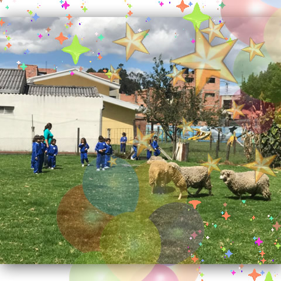
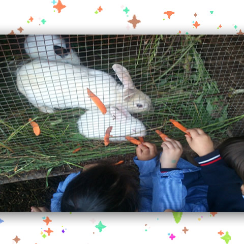
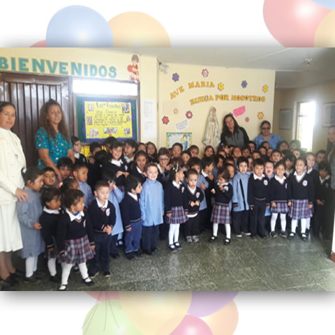

HIJAS DEL CORAZON MISERICORDIOSO DE MARIA
Jardín Infantil y Guardería San Rafael
Formamos niños y niñas que construyan desde el presente, una so7ciedad justa y equitativa, en un ambiente favorable para el desarrollo de sus habilidades y competencias a partir de sus posibilidades físicas, intelectuales, emocionales y sociales, y buscando la autenticidad y el bien tanto personal como comunitario.


CRECIENDO CON AMOR DE DIOS
DESDE LOS
PRIMEROS
PASOS
La formación en los primeros años es la más importante.
Nosotros nos especializamos en formar y educar sus hijos e hijas con edades
comprendidas entre los seis meses y seis (6) años de edad, fortaleciendo su desarrollo integral,
potenciando sus habilidades y destrezas a través del juego y la exploración del medio en un campus campestre y seguro, formando seres participativos,
creativos y autónomos que proyecten en su ser y hacer, los valores humanos y el interés por el bien familiar y social.
CONSTRUIR, PROTEGER Y
FORMAR DESDE 1971
FORMACIÓN
INTEGRAL
Fundado en 1969 por la comunidad Hijas del corazón misericordioso de María, promovemos los valores católicos,
buscamos que su hijo se construya y entregamos la seguridad, confianza y comunidad para que lo haga. En nuestro
jardín los padres tendrán la confianza y tranquilidad de que sus hijos estarán en un ambiente seguro, exclusivo y feliz
necesario para la primera infancia.
Con esto formamos futuros niños y niñas seguros, confiados y correctos.



HIJAS DEL CORAZON MISERICORDIOSO DE MARIA